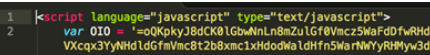

Multiple campaigns were observed making use of JavaScript and ‘backwards’ base64 to hide the phishing code. The
document starts off defining a variable ‘OIO’

Functions are defined at the end of the page. Function ‘0ll’ handles the base64 decoding, while function ‘001’ takes care
of reversing the string. The evaluation statement will reverse the contents of the 0I0 variable and then base64 decode it.

Figure 13: Function for decoding and reversing a string which will render a phishing page
Often, the resulting decoded base64 is further encoded, as can be seen in the next example “Combination encoding”.